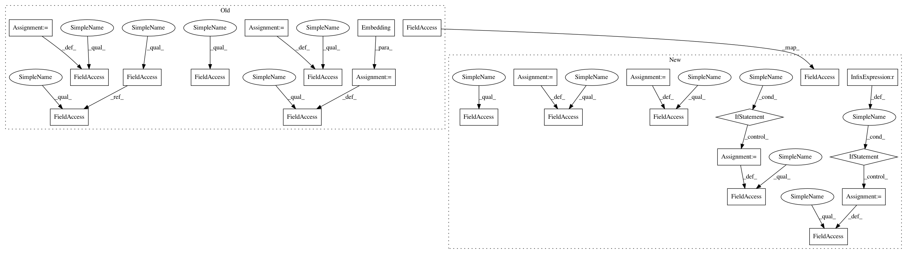

a8f7adae8546cfac4473bd514b0070367d725f2e,allennlp/models/semantic_parsing/nlvr/nlvr_semantic_parser.py,NlvrSemanticParser,__init__,#NlvrSemanticParser#Any#Any#Any#Any#Any#,46
Before Change
rule_namespace: str = "rule_labels") -> None:
super(NlvrSemanticParser, self).__init__(vocab=vocab)
self._sentence_embedder = sentence_embedder
self._denotation_accuracy = Average()
self._consistency = Average()
self._encoder = encoder
self._rule_namespace = rule_namespace
self._action_embedder = Embedding(num_embeddings=vocab.get_vocab_size(self._rule_namespace),
embedding_dim=action_embedding_dim)
// This is what we pass as input in the first step of decoding, when we don"t have a
// previous action.
self._first_action_embedding = torch.nn.Parameter(torch.FloatTensor(action_embedding_dim))
torch.nn.init.normal(self._first_action_embedding)
@overrides
def forward(self): // type: ignore
After Change
functionality for things like defining an initial ``RnnState``, embedding actions, evaluating
the denotations of completed logical forms, etc. There is a lot of overlap with
``WikiTablesSemanticParser`` here. We may want to eventually move the common functionality into
a more general transition-based parsing class.
Parameters
----------
vocab : ``Vocabulary``
sentence_embedder : ``TextFieldEmbedder``
Embedder for sentences.
action_embedding_dim : ``int``
Dimension to use for action embeddings.
encoder : ``Seq2SeqEncoder``
The encoder to use for the input question.
dropout : ``float``, optional (default=0.0)
Dropout on the encoder outputs.
rule_namespace : ``str``, optional (default=rule_labels)
The vocabulary namespace to use for production rules. The default corresponds to the
default used in the dataset reader, so you likely don"t need to modify this.
"""
def __init__(self,
vocab: Vocabulary,
sentence_embedder: TextFieldEmbedder,
action_embedding_dim: int,
encoder: Seq2SeqEncoder,
dropout: float = 0.0,
rule_namespace: str = "rule_labels") -> None:
super(NlvrSemanticParser, self).__init__(vocab=vocab)
self._sentence_embedder = sentence_embedder
self._denotation_accuracy = Average()
self._consistency = Average()
self._encoder = encoder
if dropout > 0:
self._dropout = torch.nn.Dropout(p=dropout)
else:
self._dropout = lambda x: x
self._rule_namespace = rule_namespace
self._action_embedder = Embedding(num_embeddings=vocab.get_vocab_size(self._rule_namespace),
embedding_dim=action_embedding_dim)
// This is what we pass as input in the first step of decoding, when we don"t have a
// previous action.
In pattern: SUPERPATTERN
Frequency: 3
Non-data size: 24
Instances
Project Name: allenai/allennlp
Commit Name: a8f7adae8546cfac4473bd514b0070367d725f2e
Time: 2018-05-13
Author: pradeep.dasigi@gmail.com
File Name: allennlp/models/semantic_parsing/nlvr/nlvr_semantic_parser.py
Class Name: NlvrSemanticParser
Method Name: __init__
Project Name: mozilla/TTS
Commit Name: 0a92c6d5a7601fe0b1d8d5bf53ef1774c15647cc
Time: 2019-03-25
Author: egolge@mozilla.com
File Name: models/tacotron.py
Class Name: Tacotron
Method Name: __init__
Project Name: allenai/allennlp
Commit Name: a8f7adae8546cfac4473bd514b0070367d725f2e
Time: 2018-05-13
Author: pradeep.dasigi@gmail.com
File Name: allennlp/models/semantic_parsing/nlvr/nlvr_semantic_parser.py
Class Name: NlvrSemanticParser
Method Name: __init__
Project Name: uber/ludwig
Commit Name: e9aea97df1dc7878827ac193ba75cbea0b3ee351
Time: 2020-05-05
Author: jimthompson5802@gmail.com
File Name: ludwig/models/modules/sequence_decoders.py
Class Name: SequenceGeneratorDecoder
Method Name: __init__